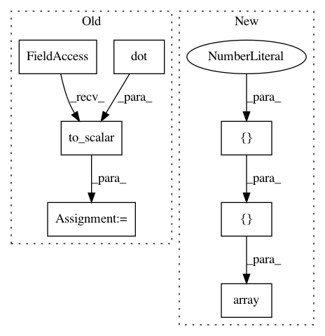

35e6ce06a3ef692f90166999e40a638035bb18b8,tests/test_euclidean_space.py,TestEuclideanSpaceMethods,test_inner_product_vectorization,#TestEuclideanSpaceMethods#,201
Before Change
[-3., 6.]])
result = self.metric.inner_product(one_point_a, one_point_b)
expected = gs.dot(one_point_a, gs.transpose(one_point_b))
expected = helper.to_scalar(expected)
with self.session():
self.assertAllClose(result, expected)
result = self.metric.inner_product(n_points_a, one_point_b)
After Change
self.assertAllClose(result, expected)
result = self.metric.inner_product(n_points_a, n_points_b)
expected = gs.array([[14.], [-12.], [21.]])
with self.session():
self.assertAllClose(gs.shape(result), (n_samples, 1))
self.assertAllClose(result, expected)
In pattern: SUPERPATTERN
Frequency: 3
Non-data size: 7
Instances
Project Name: geomstats/geomstats
Commit Name: 35e6ce06a3ef692f90166999e40a638035bb18b8
Time: 2018-12-12
Author: ninamio78@gmail.com
File Name: tests/test_euclidean_space.py
Class Name: TestEuclideanSpaceMethods
Method Name: test_inner_product_vectorization
Project Name: geomstats/geomstats
Commit Name: 1441eb9cc5eb424b5111f43890044ad5f46be2e3
Time: 2018-12-12
Author: ninamio78@gmail.com
File Name: tests/test_minkowski_space.py
Class Name: TestMinkowskiSpaceMethods
Method Name: test_squared_norm
Project Name: geomstats/geomstats
Commit Name: 15de53212565c6d8fda59f30258d69d67eed183f
Time: 2018-12-12
Author: ninamio78@gmail.com
File Name: tests/test_euclidean_space.py
Class Name: TestEuclideanSpaceMethods
Method Name: test_inner_product